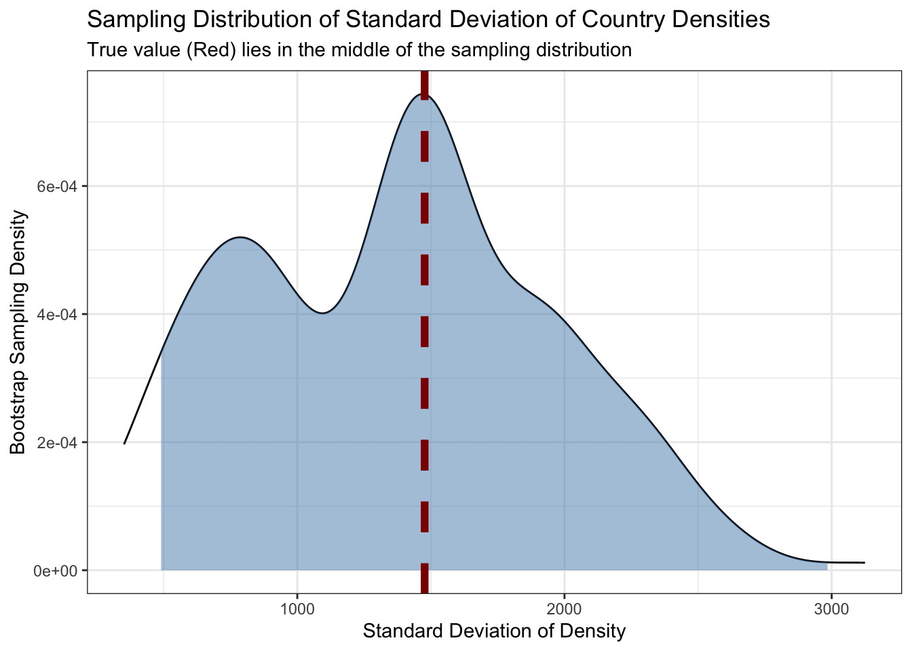
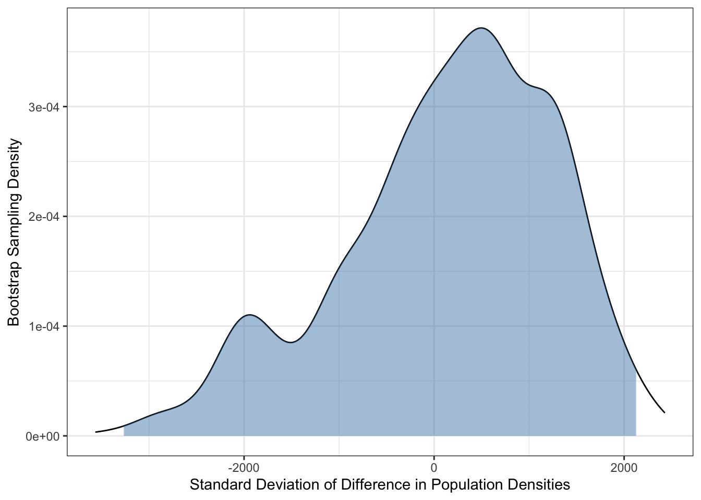
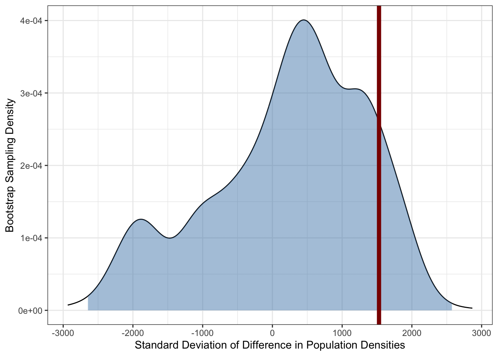
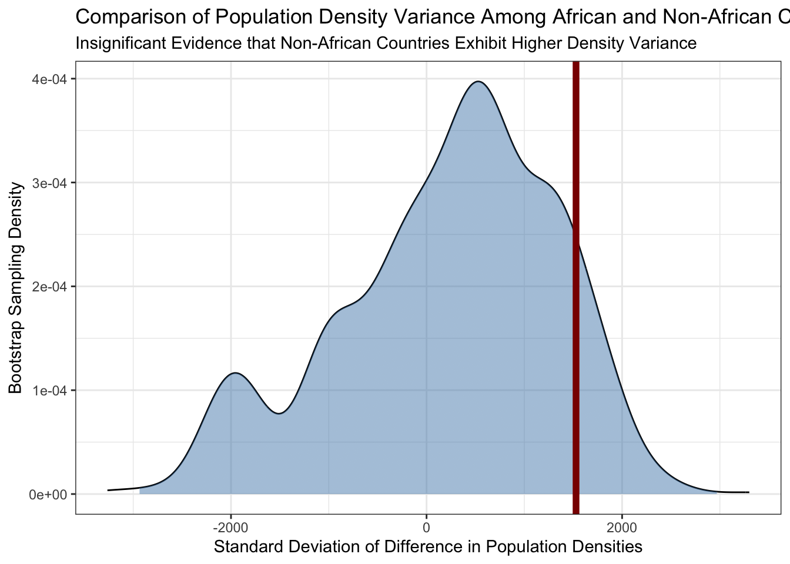

For this final warm-up exercise, you are going to use a combination of the skills learned over the semester to create a map of the countries of the world, colored by population density.
When dealing with countries, it is dangerous to use raw names as these are not entirely standardized. E.g., do we live in the “United States” or the “United States of America”? To address this, we want to use a standard format like the ISO 3-digit country codes.
The website https://peric.github.io/GetCountries/ provides this information interactively, but is a bit difficult to access programmatically. This page actually loads a JSON object that will provide all of the information we need. Use the Network tools in your web browser’s developer tools to identify the request that loads this data. (You may need to hit the Generate button again after opening the Network tools to see the request being made.)
Read this data into R and create a data frame with (at least) columns for the 3 digit ISO country code, the continent, the country name, the population, and the area in square kilometers. Make sure the population and area have been properly converted into numeric values.
TipSolution
library(tidyverse)library(jsonlite)COUNTRIES<-read_json("https://secure.geonames.org/countryInfoJSON?username=dperic", simplify=TRUE)|>pluck("geonames")|>select(iso_code =isoAlpha3, name =countryName, continent =continentName, area =areaInSqKm, population =population)|>mutate(area =as.numeric(area), population =as.numeric(population))|>filter(area>0)# Ignore countries / political entities without land area
Next, we are going to use an API to access data on country boundaries provided by the GeoBoundaries project. Specifically, we want to download shape files for all countries of the world. We do not want to use the high-resolution shapefiles as they are highly detailed and will slow down processing. Thankfully, the GeoBoundaries project already provides simplified representations of each country more suitable for plotting.
Review the API documentation at https://www.geoboundaries.org/api.html#api and make a call for gbOpen data for ALL countries at ADM0 level (country boundaries). The result will be a JSON object with elements for each country. Parse this JSON object in R and pull out (at least) the boundaryName, boundaryISO, and simplifiedGeometryGeoJSON columns into a data frame.
Join the result of the previous two sections together using an inner_join. How many countries were in each data set? Which countries are lost in the inner join? What is their total population?
Hint: An anti_join may be useful here.
In real work, you would want to do some additional manual cleaning to better align these two data sets, but we are not going to do so today to save time. There is at least one major missing country in this merge.
iso_code name continent area population
1 IND India Asia 3287590 1352617328
So India is missing - that’s a problem!
Optional In the previous section, we found that one major country was missing. After some poking around, it turns out that the missing country is linked in the ADM1 listing and not the ADM0 listing. This appears to be just a manual error, but the related GitHub issue has not yet been addressed, so we need to handle it ourselves.
Do this by making a second request to request the ADM1 listings and then filtering out any duplicates. Next join this to the response you had from before, now using a left_join() to avoid dropping results from intermediate tables. Finally, use the coalesce() function to handle redundant columns. Note that the coalesce() column takes a set of column names and gets the first non-NA value so it is great for things like this:
Make a series of web requests to read the geojson files for each of the countries using the URLs obtained from the API. Since you will want to make this request sequentially, use the map() function to call sf::st_read repeatedly. You will also want to use unnest() to remove the resulting list-column.
Create a chloropleth visualization with each country colored according to its population density.
Note that this will take a little while due to the high-resolution shapefiles used above. If you want a faster plot, you can use sf::st_simplify() to reduce the resolution of the boundaries.
Using the countries data downloaded above, use statistical models like lm() and mgcv::gam() to answer the following:
Recall the flights data from the nycflights13 package. Load this package and fit a linear model to predict air time as a function of distance.
The intercept term of this model can be interpreted as the “fixed cost” of a flight - the unavoidable time taken to travel between the gate and the runway. What is the estimate of this cost based on the model you fit?
From this, we see that the ‘fixed cost’ of air travel is approximately 18.5 minutes.
The same linear model can be used to estimate flight speed. In particular, the distance coefficient (which has units of minutes / mile) can be extracted and transformed into miles per hour. What is the average speed of a plane leaving NYC?
Modify your analysis above to estimate a different fixed cost for each of the three NYC-area airports. (Maintain a single estimate of speed for all airports.) Which seems to be the most efficient?
Use broom::tidy() and some regular expressions to create a table that looks like this:
Airport
Estimated Fixed Cost
EWR
NNN.NN
LGA
NNN.NN
JFK
NNN.NN
Hint: Your estimated coefficients will be easier to interpret if you remove the intercept term from your model by including -1 at the end of the formula.
Use the augment function to compute both the RMSE (Root Mean Squared Error) and the MedAE (Median Absolute Error) of the model you fit in the previous section.
So our model seems to be most predictive in October.
The yardstick package provides tools for evaluating model performance. The rsq function computes \(R^2\) statistics. It takes two column names as arguments (in addition to the data frame being analyzed): truth, the observed values (\(y\)), and estimate, the model predictions (\(\hat{y}\)). It can be used like this:
# A tibble: 1 × 3
.metric .estimator .estimate
<chr> <chr> <dbl>
1 rsq standard 0.790
Use it to compute the \(R^2\) of your model on a month-by-month and per-airport basis. At what airport and in what month does this model exhibit the lowest \(R^2\)? What does that tell you? How does this compare to the overall (full-sample) \(R^2\) of the model that glance provides?
Our model performs (relatively) worst at LGA in January, suggesting that other effects (e.g. weather) play the largest role here, but the effect is quite minimal.
So the drop in \(R^2\) is 99.5% to 95.6%: this isn’t nothing…
Computational Inference
Using the countries data downloaded above, test the null hypothesis that the standard deviation of population density is equal in African and non-African countries.
Before doing so, let’s review the concept of bootstrapping, a variant of the computationally-powered inference you reviewed in this week’s pre-assignment that attempts to relax the requirement that we specify a null distribution precisely.
Refresher
As discussed in this week’s pre-assignment, the core of computationally-intensive approach to statistical inference is to get many ‘pseudo-samples’ from a null distribution, to compute the test statistic on those ‘pseudo-samples’, and to compare the distribution of the test statistic against the observed value. Doing so requires us to have some sense of a null distribution: it can be a parametric posited a priori or, as we do here, it can be based on re-sampling the data at hand.
In this case, we don’t want to posit a full model for country density: we only want to see if our data supports the claim that the standard deviation of population density is the same within Africa and outside of Africa. Because we don’t require a full model to define our null hypothesis, you might be tempted to use a ‘working model’ based on a normal distribution. A quick plot of the data suggests that this data is quite heavy tailed (there are some very small, very densely populated areas like Monaco, Hong Kong, and Singapore) so this strategy of ‘get a good enough’ model isn’t likely to be productive.
But we don’t exactly need a model for country density - we really just need the ability to sample from such a null model that doesn’t distinguish Africa and non-Africa. Is there a way we can do that instead without the full overhead of a ‘proper’ model?
We turn to the technique of bootstrapping. In essence, we use the data we have as a rough model of the (unknown) distribution of interest. How does this work?
First, note that IID sampling + something like density estimation is a universal estimator. No matter the distribution (within reason), if we have enough data the sample density estimate (or histogram or empirical CDF) will converge to the corresponding true distribution. While this seems intuitive, not everything in statistics is like this: e.g., no matter how much data you have, linear regression will never get the ‘true’ relationship if it is actually non-linear. Here, we’re replying the fact that things like a density estimate or the ECDF are non-parametric and can fit essentially any shape.
Let \(\hat{\mathbb{P}}_n\) be the ‘estimated CDF’ based on the observed data: we can evaluate \(\hat{\mathbb{P}}_n\) by:
That is, to estimate the CDF at any point \(x\), we simply look at the fraction of points that fall below \(x\). The law of large numbers1 tells us that
\[\hat{\mathbb{P}}_n(x) \to \mathbb{P}(x) \text{ for all } x\] or just
\[\hat{\mathbb{P}}_n \to \mathbb{P}\]
where \(\mathbb{P}\) is the true distribution used to generate the data. This suggests to us that, while we might be interested in the variance of our test statistic \(T\) under distribution \(\mathbb{P}\), we can approximate it using \(\hat{\mathbb{P}}_n\). That is, we hope that
for any test statistic \(T\) as the sample size \(n \to \infty\). Notably, this should work for almost any distribution \(\mathbb{P}\) and any test statistic \(T\). Similar results hold for quantiles of \(T\) as well:
\[q\text{-Quantile}_{\hat{\mathbb{P}}_n}(T) \to q\text{-Quantile}_{\mathbb{P}}(T) \text{ for all } q \in (0, 1)\]
So this means that we can approximate \(\text{Quantile}_{\mathbb{P}}(T)\) if we can estimate \(\text{Quantile}_{\hat{\mathbb{P}}_n}(T)\). This leaves us with just one question: how do we sample from \(\hat{\mathbb{P}}_n\)?
Note that \(\hat{\mathbb{P}}_n\) is the CDF of a discrete distribution with equal jumps at each observation: that is, it’s uniform over the observed samples. So how can we sample from a uniform distribution? We simply pick one of its values at random. And how do we get a second sample, we just get another value at random once again.
Bootstrap sampling is often described as sampling with replacement. This is true, but I don’t like it as an explanation because it seems a bit magical.
The true idea of bootstrapping is that we are just getting \(n\) samples from a (uniform) distribution over the original data. When we take any number of samples from a discrete distribution, there is always a possibility of ties, regardless of how we came up with that distribution. “Bootstrap sampling with replacement” is then just weirdly redundant: regular sampling of any distribution always allows with replacement.”2 (You would never specify ‘flipping a coin three times with replacement’!)
To recap: in bootstrapping
We build a discrete uniform distribution from the original data
We sample from that distribution to estimate quantities of interest
The fact we get samples with replacement is not because we are bootstrapping per se, it’s just because we are IID sampling from a distribution and the values that distribution don’t change based on what we saw previously.
Before we apply this to statistical hypothesis testing, let’s just use this idea to estimate the quantiles of the standard deviation of the country density. The point estimate is straightforward:
But how can we get a sense of the variance of this quantity? Ideally, we would have many sets of countries and could compute standard deviation within each set and then compute a variance across sets. Resampling will get us there:
A bit different - but not too much. But one ‘alternate world value’ isn’t enough to get quantiles. We need many! There are several ways to code this in dplyr, but one of the easiest is to use the expand_grid() function to induce replicates:
This gives us a sense of the range of plausible standard deviations - or, more precisely, the range of standard deviations that are consistent with the observations we have seen.
We can plot these as well:
COUNTRIES|>filter(area>0)|>mutate(density =population/area, true_density_sd =sd(density))|>expand_grid(replicate=1:200)|>mutate(density_resampled =sample(density, replace=TRUE))|>group_by(replicate)|>summarize(density_sd_resampled =sd(density_resampled), true_density_sd =first(true_density_sd))|>mutate(density_sd_q95 =quantile(density_sd_resampled, 0.95), density_sd_q05 =quantile(density_sd_resampled, 0.05))|>ggplot(aes(x=density_sd_resampled))+geom_density()+theme_bw()+xlab("Standard Deviation of Density")+ylab("Bootstrap Sampling Density")+geom_area(stat="density", aes(fill =after_stat(x)>quantile(x, 0.05)&after_stat(x)<quantile(x, 0.95)))+scale_fill_manual(name="Central 90%", values=c("TRUE"="#4682B477","FALSE"=NA))+guides(fill="none")+geom_vline(aes(xintercept=true_density_sd), color="red4", linewidth=2, linetype=2)+ggtitle("Sampling Distribution of Standard Deviation of Country Densities", "True value (Red) lies in the middle of the sampling distribution")

We see here that, unsurpsingly, the bootstrap distribution is located around the ‘true’ value, with a second mode that likely corresponds to the times that the highest- and lowest-density countries are randomly excluded. This second mode provides us strong evidence that country populations and areas are not normally distributed (if that weren’t already obvious).
In this case, if we, for whatever reason, had a null belief that the ‘true’ standard deviation was near 3000, it would be clear that this is quite incompatible with the observed value (red line) but also with the variance around that observed value (blue area).
Boostrap Testing in Action
Now it’s your turn! Using the countries data downloaded above, test the null hypothesis that the standard deviation of population density is equal in African and non-African countries.
Create a new (Boolean) variable to determine whether a country is in Africa or not.
TipSolution
COUNTRIES<-COUNTRIES|>mutate(in_africa =(continent=="Africa"), density =population/area)
Compute the standard deviation of density for both African and non-African countries, then compute the difference in standard deviations. This will be the ‘observed’ value we want to compare against the bootstrap samples.
Modify the strategy above to compute standard deviations for African and non-African countries in each replicate.
Hint: When forming replicates, we are assuming that the distribution of African and non-African countries is the same, so we do not need to modify our bootstrap sampling in any significant way. Here, the two-group structure is only used to define our test statistic.
`summarise()` has regrouped the output.
ℹ Summaries were computed grouped by replicate and in_africa.
ℹ Output is grouped by replicate.
ℹ Use `summarise(.groups = "drop_last")` to silence this message.
ℹ Use `summarise(.by = c(replicate, in_africa))` for per-operation grouping
(`?dplyr::dplyr_by`) instead.
`summarise()` has regrouped the output.
ℹ Summaries were computed grouped by replicate and in_africa.
ℹ Output is grouped by replicate.
ℹ Use `summarise(.groups = "drop_last")` to silence this message.
ℹ Use `summarise(.by = c(replicate, in_africa))` for per-operation grouping
(`?dplyr::dplyr_by`) instead.

Add a vertical line for your observed value (computed above). If this falls outside the shaded area, we can reject the null of no difference between African and non-African countries.
TipSolution
COUNTRIES|>expand_grid(replicate=1:1000)|>mutate(density_resampled =sample(density, replace=TRUE))|>group_by(replicate, in_africa)|>summarize(sd_density_resampled =sd(density_resampled))|>mutate(in_africa =if_else(in_africa, "africa", "nonaf"))|>pivot_wider(names_from=in_africa, values_from=sd_density_resampled)|>mutate(delta_sd_resampled =nonaf-africa)|>ggplot(aes(x=delta_sd_resampled))+geom_density()+theme_bw()+xlab("Standard Deviation of Difference in Population Densities")+ylab("Bootstrap Sampling Density")+geom_area(stat="density", aes(fill =after_stat(x)>quantile(x, 0.05)&after_stat(x)<quantile(x, 0.95)))+scale_fill_manual(name="Central 90%", values=c("TRUE"="#4682B477","FALSE"=NA))+guides(fill="none")+geom_vline(xintercept=delta_sd_observed, color="red4", linewidth=2)
`summarise()` has regrouped the output.
ℹ Summaries were computed grouped by replicate and in_africa.
ℹ Output is grouped by replicate.
ℹ Use `summarise(.groups = "drop_last")` to silence this message.
ℹ Use `summarise(.by = c(replicate, in_africa))` for per-operation grouping
(`?dplyr::dplyr_by`) instead.

From here, we see that while there is a wider spread among non-African countries than there is among African countries, it is not inconsistent with ‘pure randomness’ that we could get if we randomly swapped the labels on this data. In particular, we see that we can get differences in standard deviations of \(\pm 2000\), so the observed difference of 1529 is not that big in context.3
TipAll In One Go
If you want to avoid having delta_sd_observed as its own variable, this example shows how it can be handled as its own column to get the same results:
COUNTRIES|>expand_grid(replicate=1:1000)|>mutate(density_resampled =sample(density, replace=TRUE))|>group_by(replicate, in_africa)|>summarize(sd_density_resampled =sd(density_resampled), sd_density =sd(density), .groups="drop")|>mutate(in_africa =if_else(in_africa, "africa", "nonafr"))|>pivot_wider(names_from=in_africa, values_from=c(sd_density, sd_density_resampled))|>mutate(delta_sd_resampled =sd_density_resampled_nonafr-sd_density_resampled_africa, delta_sd =sd_density_nonafr-sd_density_africa)|>ggplot(aes(x=delta_sd_resampled))+geom_density()+theme_bw()+xlab("Standard Deviation of Difference in Population Densities")+ylab("Bootstrap Sampling Density")+geom_area(stat="density", aes(fill =after_stat(x)>quantile(x, 0.05)&after_stat(x)<quantile(x, 0.95)))+scale_fill_manual(name="Central 90%", values=c("TRUE"="#4682B477","FALSE"=NA))+guides(fill="none")+geom_vline(aes(xintercept=delta_sd), color="red4", linewidth=2)+ggtitle("Comparison of Population Density Variance Among African and Non-African Countries", "Insignificant Evidence that Non-African Countries Exhibit Higher Density Variance")

I like to code these types of analyses ‘by hand’ and think that it is a useful exercise to clarify the logic of statistical testing; sometimes, particularly if you want to stay closer to a ‘standard’ test with standard test statitics, it may be easier to rely on a pre-packaged implementation. The infer package makes this type of computational inference quite easy and supports both parametric, bootstrap, and permutation based approaches to inference. See this vignette for more.
Tidymodels
The tidymodels package provides an elegant interface for applying many “black box” machine learning models in a standardized manner. This is especially useful when you want to compare many different models to see which performs the best on a prediction task.4
In these notes, we’re going to use tidymodels for two tasks that may be useful as you finish your final projects:
Building a model that takes in several features and uses them to predict an output of interest
Using both feature importance scores and a leave-one-covariate-out (LOCO) strategy to determine which features are most important.
Tidymodels Basics
tidymodels provides a unified framework for building predictive models. In this context, we are solely focused on out-of-sample prediction and aren’t paying attention to things like coefficients or statistical significance. This single-minded focus makes it possible for tidymodels to “abstract” over different types of machine-learning models, using them only as prediction machines.5
We will demonstrate the use of the tidymodels ecosystem6 to build a predictive model on a data set of NYS public school test results. I have prepared two files containing relevant data:
The first file, schools_covariates.csv, has data on 4754 schools, covering information about class size, the number of teachers and support staff, the percentage of students who quality for discounted or free lunches, and funding levels.7 The latter file, school_test_results.csv, has 144921 test results, indexed by the school, the student subgroup (e.g.., all male students or all non-white students), and the test subject. The variable we seek to predict is PERCENT_PROFICIENT, the fraction of students who achieved a ‘proficient’ score on that test.8
NoteAdditional Background
Persuant to the Every Student Succeeds Act (ESSA) of 2015 and its predecessor, the No Child Left Behind Act (NCLB) of 2001, all public schools in New York State are required to administer standardized examinations annually to their students. Students’ results on these tests are used for a variety of purposes, including assessing teacher and school performance, providing additional recognition to high-performing schools, and identifying struggling students or subgroups. The New York State Education Department (NYSED) makes aggregate test results available through its annual “School Report Card” data releases. For this exercise, we will predict the percentage of students at each school who score in the “Proficient” range (i.e., at or above grade level) on a wide battery of standardized tests during the 2024 testing period.
New York administers two primary sets of standardized exams:9
Grade 3-8 Exams:
English Language Arts (“ELA”) given every year
Mathematics given every year
Science, typically given only in grade 5 and grade 8
The Regents exams cover a broader variety of topics and, historically, have been a graduation requirement in NYS. For each exam, a “proficiency” level is determined: e.g., if a exam gives scores from “1” to “4”, levels “3” and “4” may be considered “proficient”. Your task is to predict the fraction of students who achieve proficiency.
The organization of public schools in New York State is, like everything in New York State, rather confusing. As of the time of writing, NYSED reports:
730 Districts
4,394 Public Schools
373 Charter Schools
215,701 Public School Teachers
2,421,491 Public School Students
in the state. These districts range from very small, e.g., Newcomb CSD with 47 students to very large, e.g., NYC Public Schools with just under a million students.
Outside of NYC, public schools are organized into local school districts, which typically have (at least) one elementary school, one middle school, and one high school.10 These districts are further organized into Boards of Cooperative Educational Serices “BOCES” which provide shared resources to groups of smaller districts. Local school districts are principally funded by property taxes, with more affluent districts having a larger tax base and providing higher per-student funding levels. Local school districts are run by an elected school board, following statewide standards. To address differences in funding, NYSED provides supplemental funding to districts based on their assessed “Needs/Resource Capacity”, though work is ongoing to update and refine the current funding formula.
Within NYC, public schools are run by the NYC Department of Education (NYC DOE), under a commissioner and school board appointed by the mayor and borough presidents. NYCDOE is subdivided into 32 geographic school districts and two citywide districts providing specialized services for students with disabilities or students in alternative education programs.
Let’s read these files into R, join them together, and remove some identifiers that aren’t relevant to us:
In the interest of speed, we’re only going to use a few features and a subset of the entire data set, though all of the code shown here can be scaled up to use all of the rows and columns in this data set:
DATA<-DATA|>mutate(# Lunch discount as a proxy for family income LUNCH_DISCOUNT =PERCENT_FREE_LUNCH+PERCENT_REDUCED_LUNCH, # Student-teacher-ratio STUDENT_TEACHER_RATIO =N_PUPILS/NUMBER_OF_TEACHERS, # Does more funding actually help? FUNDING_PER_STUDENT =LOCAL_FUNDING_PER_PUPIL+FEDERAL_FUNDING_PER_PUPIL)|>select(# Outcome of interestPERCENT_PROFICIENT, # Population of interest: which test and which group of students?SUBGROUP_NAME, ASSESSMENT_NAME, # Three constructed featuresLUNCH_DISCOUNT, STUDENT_TEACHER_RATIO, FUNDING_PER_STUDENT)|>slice_sample(n=10000)
CautionSimplified Modeling
The model demonstrated here ignores much of the interesting structure (schools within districts within regions, etc) of this data that a more effective model would take advantage of. The simple model we show here is intended to demonstrate the use of tidymodels, not to be the last word in modeling this type of data.
Prediction Models
For this demonstration, we are going to build a random forest (RF) predictor. Random forests are a powerful and flexible machine learning tool that can be fit efficiently and don’t require too much tuning.
tidymodels requires us to specify a few separate components of our model fitting pipeline:
A recipe describing how the prediction task is specified and any data pre-processing that is performed. This is the stage in which we specify which variables are to be used as predictors and which is our outcome. We also perform steps like data standardization, imputing missing values, handling categorical features, removing ‘low information features’, etc. here.
A model specification indicating what type of model we want to use. At this stage, in addition to specifying the type of model, we also have the option to specify any ‘knobs’ (hyperparameters) that control model behavior and, for models with multiple implementations, specify which package we want to use.
The range of tuning parameters (if any) to consider
Data used to tune and evaluate the model
Let us build these each in turn. We first build a recipe() for our task, a set of steps that define the roles of each variable (predictor or response) and any pre-processing, if necessary. In this case, we don’t need much pre-processing as we’re using a model family that’s quite robust.
Here, we simply specify that we want to predict one column (PERCENT_PROFICIENT) using all other features (.). At this point, we have specified our goal, but we still need to specify the manner (model) by which we hope to achieve that goal.
For this task, we’re going to specify a random forest model:
Here, we have specified a basic random forest and set two properties:
the mode specifies what type of random forest we are fitting. Here we are predicting a continuous response rather than a categorical or discrete one, so our task is ‘regression’ in the jargon of machine learning.
the engine specifies which R package we want to use. Here, we’re using the ranger package which provides a high-performance and high-quality implementation of the random forest framework.
At this point, we can define a workflow() object that will put these two together:
Indeed, we could even compute a set of accuracy measures for this problem:11
metrics<-metric_set(# Root Mean Squared Errorrmse, # R-Squaredrsq, # Mean Absolute Errormae, # Mean Absolute Percentage Error, mape)augment(rf_fitted, new_data=DATA)|>metrics(truth=PERCENT_PROFICIENT, estimate=.pred)
# A tibble: 4 × 3
.metric .estimator .estimate
<chr> <chr> <dbl>
1 rmse standard 10.2
2 rsq standard 0.880
3 mae standard 7.96
4 mape standard Inf
So that last row – “percent error” – goes a bit janky just because we have 105 tests on which 0% of students were at grade level. We can exclude these from our analysis and use other tidyverse techniques to see how our model performs on different tests:
This is good, as far as it goes, but we have violated several ML best practices. In fact, the new_data argument to augment() should have been a bit of a warning sign. Here, we are evaluating the model on the data used to train it.
A better practice is to hold some of our data aside and use it for model evaluation. This can be done in several ways, but here we’re going to use a technique known as cross-validation wherein we split the data into several pieces and fit the model several times, holding out one piece for evaluation each time.
This is conceptually straightforward, but the book-keeping can be a bit of a pain. Thankfully, tidymodels is available to help us:
Note that here we use fit_resamples() instead of a plain fit() to account for this repeated fitting and evaluation structure. In this case, we also see that several metrics were automatically computed for us
# A tibble: 5 × 5
id .metric .estimator .estimate .config
<chr> <chr> <chr> <dbl> <chr>
1 Fold1 rmse standard 18.7 pre0_mod0_post0
2 Fold1 rsq standard 0.480 pre0_mod0_post0
3 Fold2 rmse standard 18.6 pre0_mod0_post0
4 Fold2 rsq standard 0.522 pre0_mod0_post0
5 Fold3 rmse standard 18.9 pre0_mod0_post0
If we want to use all four metrics from before, we can pass the metrics argument to fit_resamples(). This gives us a sense of error bars on our metrics, which we can compute by hand or with the help of the collect_metrics():
# A tibble: 4 × 6
.metric .estimator mean n std_err .config
<chr> <chr> <dbl> <int> <dbl> <chr>
1 mae standard 14.7 5 0.146 pre0_mod0_post0
2 mape standard Inf 5 NaN pre0_mod0_post0
3 rmse standard 18.6 5 0.180 pre0_mod0_post0
4 rsq standard 0.504 5 0.00852 pre0_mod0_post0
If we want to get group-wise statistics as before, we still need to do a bit of work by hand.
schools_rf|>fit_resamples(schools_cv, metrics =metrics, control =control_resamples(save_pred =TRUE))|>collect_predictions()|>arrange(.row)|>inner_join(DATA|>mutate(.row=row_number()), join_by(.row, PERCENT_PROFICIENT))|>filter(PERCENT_PROFICIENT>0)|>group_by(ASSESSMENT_NAME, id)|>metrics(truth=PERCENT_PROFICIENT, estimate=.pred)|>group_by(ASSESSMENT_NAME, .metric)|>summarize(mean_metric =mean(.estimate), sd_metric =sd(.estimate), se_metric =sd_metric/sqrt(n()))|>ungroup()|>select(-sd_metric)|>pivot_wider(values_from=c(mean_metric, se_metric), names_from=.metric)|>mutate(mean_metric_mape =mean_metric_mape/100, se_metric_mape =se_metric_mape/100)|>gt(id="tbl_exams_2", rowname_col ="ASSESSMENT_NAME")|>cols_label(mean_metric_rmse="Root Mean Squared Error", mean_metric_rsq="R^2", mean_metric_mae="Mean Absolute Error", mean_metric_mape="Mean Absolute Percent Error")|>fmt_percent(c(mean_metric_rsq, se_metric_rsq, mean_metric_mape, se_metric_mape))|>fmt_number(c(mean_metric_rmse, se_metric_rmse, mean_metric_mae, se_metric_mae))|>cols_merge(c(mean_metric_rmse, se_metric_rmse), pattern="{1}±{2}")|>cols_merge(c(mean_metric_rsq, se_metric_rsq), pattern="{1}±{2}")|>cols_merge(c(mean_metric_mae, se_metric_mae), pattern="{1}±{2}")|>cols_merge(c(mean_metric_mape, se_metric_mape), pattern="{1}±{2}")|>sub_missing()|>tab_header("Prediction Error Metrics by Exam", "CV Prediction Error of a Random Forest Model Predicting Student Exam Proficiency Using Funding, SES, and Student-Teacher Ratios")
Prediction Error Metrics by Exam
CV Prediction Error of a Random Forest Model Predicting Student Exam Proficiency Using Funding, SES, and Student-Teacher Ratios
Mean Absolute Error
Mean Absolute Percent Error
Root Mean Squared Error
R^2
Combined6Math
14.98±0.89
41.32%±8.45%
18.17±0.91
41.79%±9.02%
Combined7Math
12.95±0.55
38.92%±8.47%
15.73±0.49
39.41%±6.75%
Combined8Math
15.29±1.34
38.14%±4.81%
18.14±1.69
48.79%±7.02%
CombinedScience
12.17±0.98
44.98%±6.25%
14.91±1.29
67.33%±5.25%
ELA3
14.48±0.53
53.94%±4.81%
17.92±0.66
30.72%±2.35%
ELA4
14.70±0.33
47.83%±2.80%
17.85±0.53
33.51%±3.19%
ELA5
13.89±0.32
54.20%±6.13%
17.33±0.56
32.62%±5.44%
ELA6
13.97±0.76
49.58%±4.69%
17.24±0.75
35.19%±2.68%
ELA7
13.52±0.35
38.96%±1.70%
17.14±0.56
32.97%±1.95%
ELA8
12.15±0.46
29.97%±2.51%
15.22±0.57
39.35%±3.69%
MATH3
16.04±0.41
45.41%±6.06%
19.65±0.45
25.42%±2.13%
MATH4
15.15±0.48
39.17%±1.77%
18.63±0.61
32.85%±3.09%
MATH5
15.29±0.35
58.56%±4.91%
19.26±0.43
32.14%±3.09%
MATH6
15.30±0.23
47.25%±5.26%
18.78±0.45
35.12%±2.85%
MATH7
15.47±0.55
40.77%±4.30%
19.35±0.48
28.15%±2.98%
MATH8
17.66±1.21
81.95%±12.04%
21.90±1.76
16.36%±6.04%
Regents Algebra I
17.82±0.31
42.82%±4.10%
22.08±0.40
37.00%±2.90%
Regents Common Core Algebra I
16.59±0.31
78.45%±7.91%
19.89±0.39
38.37%±5.87%
Regents Common Core Algebra II
13.01±0.90
47.31%±8.48%
16.75±1.25
65.66%±4.81%
Regents Common Core English Language Art
10.94±0.34
16.01%±0.70%
13.91±0.40
49.61%±4.33%
Regents Common Core Geometry
16.75±0.95
97.12%±9.08%
20.58±1.12
57.41%±4.29%
Regents Living Environment
15.71±0.34
36.54%±3.14%
19.90±0.49
39.31%±4.13%
Regents NF Global History
12.11±0.42
18.79%±1.20%
15.20±0.41
46.96%±4.48%
Regents Phy Set/Chemistry
14.55±0.65
65.14%±19.61%
18.31±0.65
51.85%±4.85%
Regents Phy Set/Earth Sci
14.71±0.60
41.38%±8.72%
18.90±0.83
43.17%±5.02%
Regents Phy Set/Physics
15.90±0.92
27.59%±3.12%
19.19±0.85
29.19%±7.40%
Regents US History&Gov't (Framework)
11.47±0.57
20.57%±2.15%
15.21±0.87
46.85%±4.49%
RegentsMath7
15.00±7.37
15.45%±7.80%
15.15±7.52
—±—
RegentsMath8
14.27±1.48
39.91%±10.37%
19.49±2.61
34.44%±14.83%
RegentsScience8
12.48±0.99
22.79%±2.86%
17.04±1.65
43.66%±11.72%
Science5
12.09±0.45
54.95%±7.73%
15.40±0.49
34.57%±3.49%
Science8
12.67±0.49
76.05%±14.26%
16.05±0.60
18.70%±2.43%
Not surprisingly, our performance here is worse than we saw above, because we are now getting ‘out-of-sample’ results.
This is rather messy, but it gives us a good sense of how well our model can do on different exams. In general, we see that we are 10-15% off (RMSE) using these three features, so our model isn’t great yet.
LOCO Inference
With our model in hand, we now want to ask which of our three big features is most important. In general, when assessing feature importance we have a choice between methods intrinsic to the model (e.g., regression coefficients for OLS) or methods extrinsic to the model. Extrinsic methods are necessarily less specific, but useful because they can be compared across different models.
Here, we’re going to demonstrate the use of the extrinsic model known as Leave-One-Covariate-Out (LOCO) feature importance. In brief, LOCO compares the model with and without some feature and compares the predictic performance. If the performance changes significantly, the feature was important; if the performance doesn’t change much, either the model didn’t really use the feature or the value of that feature could be replaced by other correlated features; either way, a small change (low LOCO score) indicates that the feature is not that important.
The following code can be used to compute the LOCO scores here:
calc_loco<-function(workflow_obj, data, metrics=NULL, loco_groups=NULL, v=5){# Step 1: Extract LOCO Features# # We want loco-groups to be a list of features (or groups of features) we can# iterate over. This does a bit of pre-processing to automatically produce# the list if not provided or to convert a vector to a list of singletons# if a character vector is providedif(is.null(loco_groups)){# If the loco_groups aren't provided, let's just pull out each predictor# from the recipe component of the workflow object and use those as our# features to LOCOloco_groups<-workflow_obj|>extract_recipe(estimated=FALSE)|>summary()|>filter(role=="predictor")|>pull(variable)|>set_names()|>as.list()}elseif(is.character(loco_groups)){loco_groups<-loco_groups|>set_names()|>as.list()}# Step 2 - Set up resampling. If given an rset (resampling set) object, just# use that. Otherwise, automatically perform v-fold CV (v from above) internallyfolds<-if(inherits(data, "data.frame")&&!inherits(data, "rset")){vfold_cv(data, v =v)}else{data}# Step 3. Implementing LOCO. ## This function will take a list of variables (if provided) and temporarily# remove them from the predictors (marking them as 'LOCO' role instead) # and re-fit the model. tidymodels will automaticaly ignore LOCO-marked # variables, giving us the predictions we need to get our LOCO scores. # # This function only takes variables to drop - everything else is captured# dynamically from the enclosing environmentrun_loco<-function(drop_vars){if(is.null(drop_vars)){message("Running Full Model (LOCO Baseline)")loco_wflow<-workflow_obj}else{message(paste("Running LOCO Model - Omitting", drop_vars))wflow_recipe<-workflow_obj|>extract_recipe(estimated =FALSE)|>update_role(all_of(drop_vars), new_role="LOCO")loco_wflow<-workflow_obj|>update_recipe(wflow_recipe)}# Fit model to resampled data and get resultsloco_wflow|>fit_resamples(resamples =folds, metrics =metrics)|>collect_metrics()|>select(-.estimator, -.config)|>mutate(direction =map_chr(.metric, \(m)get(m)|>attr("direction")))}# Step 4. Showtime. First fit the full model, then iterate through loco_groups# performing each LOCOfull_results<-run_loco(NULL)|>mutate(LOCO_feature="FULL_MODEL")|>select(-n, -std_err, -LOCO_feature)loco_results<-imap(loco_groups, \(x, y)run_loco(x)|>mutate(LOCO_feature=y))|>list_rbind()|>select(-n, -std_err)inner_join(loco_results, full_results, join_by(.metric, direction), suffix=c(".LOCO", ".FULL"))|>mutate(loco_value =mean.FULL-mean.LOCO, loco_value =if_else(direction=="minimize", -1, 1)*loco_value)|>rename(loco_score =loco_value, metric=.metric, full_model=mean.FULL, loco_model=mean.LOCO)}
We can apply this to get LOCO scores for this model:
schools_loco<-calc_loco(schools_rf, schools_cv)
which gives us:
Dropped Feature
Root Mean Squared Error
R^2
SUBGROUP_NAME
1.09 (18.58 -> 19.67)
0.06 (0.5 -> 0.44)
ASSESSMENT_NAME
3.88 (18.58 -> 22.46)
0.22 (0.5 -> 0.28)
LUNCH_DISCOUNT
4.22 (18.58 -> 22.8)
0.25 (0.5 -> 0.26)
STUDENT_TEACHER_RATIO
0.79 (18.58 -> 19.37)
0.04 (0.5 -> 0.46)
FUNDING_PER_STUDENT
0.29 (18.58 -> 18.87)
0.02 (0.5 -> 0.49)
From this, we see that knowing the subject and grade (via ASSESSMENT_NAME) is the most important information in predicting performance, followed very closely by family socioeconomic status (LUNCH_DISCOUNT). By contrast, student demographics (via SUBGROUP_NAME) or school properties (FUNDING_PER_STUDENT and STUDENT_TEACHER_RATIO) seem much less important.
While powerful - this LOCO framework has a few limitations to be aware of:
It can only measure importance vis-a-vis the type of model being fit, here a random forest and is not an abstract ‘model-free’ measure of importance.12 Theoretically, some other model could take better advantage of a feature that random forests can’t really make much use of in this data.
LOCO scores are only meaningful insofar as the model itself is predictive. Knowing how useful a feature is to a useless model is not actually valuable.
Fitting LOCO can be quite computationally intensive: if we have \(p\) features and use 5-fold CV, we have to fit \(5(p+1)\) models. If these are slow, this can start to add up. To improve performance, we can either parallelize at the model fitting level (set_engine("ranger", num.threads=4)) or at the cross-validation level by registering a parallelization system and letting tidymodels pick it up automatically.
LOCO in Action
Apply this LOCO technique to the Hotel Prediction case study from the tidymodels tutorial.
For your convenience, I have copied and simplified the relevant parts of the case study below:
library(tidyverse)library(tidymodels)hotels<-read_csv("https://tidymodels.org/start/case-study/hotels.csv")|>mutate(across(where(is.character), as.factor))hotel_splits<-initial_validation_split(hotels, strata =children, prop =c(0.60, 0.15))# TODO: Clarify how tidymodels is using these various splits.hotel_train<-training(hotel_splits)hotel_val<-validation(hotel_splits)hotel_test<-testing(hotel_splits)hotel_other<-bind_rows(hotel_train, hotel_val)val_set<-validation_set(hotel_splits)holidays<-c("AllSouls", "AshWednesday", "ChristmasEve", "Easter", "ChristmasDay", "GoodFriday", "NewYearsDay", "PalmSunday")hotel_recipe<-recipe(children~., data =hotel_other)|>step_date(arrival_date)|>step_holiday(arrival_date, holidays =holidays)|>step_rm(arrival_date)hotel_recipe_one_hot<-hotel_recipe|>step_dummy(all_nominal_predictors())|>step_zv(all_predictors())|>step_normalize(all_predictors())lr_mod<-logistic_reg(penalty =tune(), mixture =1)|>set_engine("glmnet")lr_workflow<-workflow()|>add_model(lr_mod)|>add_recipe(hotel_recipe_one_hot)lr_reg_grid<-tibble(penalty =10^seq(-4, -1, length.out =30))lr_res<-lr_workflow|>tune_grid(val_set, grid =lr_reg_grid, control =control_grid(save_pred =TRUE), metrics =metric_set(roc_auc))rf_mod<-rand_forest(mtry =tune(), min_n =tune(), trees =200)|>set_engine("ranger", num.threads =parallel::detectCores())|>set_mode("classification")rf_workflow<-workflow()|>add_model(rf_mod)|>add_recipe(hotel_recipe)rf_res<-rf_workflow|>tune_grid(val_set, grid =25, control =control_grid(save_pred =TRUE), metrics =metric_set(roc_auc))lr_best_params<-lr_res|>select_best(metric="roc_auc")lr_best_workflow<-lr_workflow|>finalize_workflow(lr_best_params)rf_best_params<-rf_res|>select_best(metric="roc_auc")rf_best_workflow<-rf_workflow|>finalize_workflow(rf_best_params)
Apply LOCO inference to the lr_best_workflow to determine the most important features to logistic regression. For data, use hotel_train.
lr_loco_results|>select(-full_model, -loco_model, -direction)|>pivot_wider(names_from=metric, values_from=loco_score)|>arrange(desc(roc_auc))|>gt(id="tbl_loco_lr")|>cols_label(accuracy="Classification Accuracy", brier_class="Brier Score", roc_auc="Area Under the ROC Curve", LOCO_feature="Feature")|>tab_header("LOCO Feature Importance", "Larger values signify larger (adverse) shifts in model performance")|>tab_spanner("Performance Measures", -LOCO_feature)|>fmt_percent(accuracy)|>fmt_number(c(brier_class, roc_auc), decimals=4)
LOCO Feature Importance
Larger values signify larger (adverse) shifts in model performance
Feature
Performance Measures
Classification Accuracy
Brier Score
Area Under the ROC Curve
total_of_special_requests
0.02%
0.0008
0.0124
reserved_room_type
0.51%
0.0035
0.0087
assigned_room_type
0.05%
0.0009
0.0075
average_daily_rate
0.03%
0.0008
0.0072
booking_changes
−0.00%
0.0001
0.0054
market_segment
0.05%
0.0002
0.0026
customer_type
0.02%
0.0001
0.0024
meal
0.03%
0.0004
0.0022
adults
0.08%
0.0009
0.0014
hotel
0.24%
0.0014
0.0014
country
−0.00%
−0.0001
0.0005
previous_bookings_not_canceled
−0.00%
0.0000
0.0004
distribution_channel
0.00%
0.0000
0.0002
days_in_waiting_list
0.00%
0.0000
0.0001
stays_in_week_nights
0.00%
0.0000
0.0000
previous_cancellations
0.00%
0.0000
0.0000
deposit_type
0.00%
0.0000
0.0000
arrival_date
0.00%
0.0000
0.0000
required_car_parking_spaces
0.00%
0.0000
0.0000
lead_time
0.02%
0.0001
−0.0001
stays_in_weekend_nights
0.01%
0.0000
−0.0001
is_repeated_guest
0.01%
0.0000
−0.0001
Note here that these values are a bit random due to the internal cross-validation used for LOCO scores, but most of the scores are 0 across several features, consistent with the fact we are performing sparse logistic regression, i.e., logistic regression with several coefficients set to zero.
Compare the LOCO feature scores computed above with the regression coefficients of the fitted model. Do they align? If no, why not?
Hint: Use tidy() on the result of fitting the workflow to get the coefficients of the selected linear model.
TipSolution
This function is a bit complex, will help coloring columns in a predictable and standardized way:
color_cols_centered<-function(gt_tbl, ..., palette="RdBu", .multiplier=1.01){tbl_body<-gt_tbl|>extract_body()## tidyselect magic to handle the dots and allow helpers and `-` selectorscolumn_quosure<-rlang::enquos(...)col_names<-names(tidyselect::eval_select(expr(c(!!!column_quosure)), tbl_body))center_column<-function(gt_tbl, col_name){x<-tbl_body|>pull(!!col_name)suppressWarnings(x_numeric<-as.numeric(x))if(all(is.na(x_numeric))){warning(glue::glue("Could not treat column {col_name} as numeric. Consider using color_col_centered before fmt_*() functions"))return(gt_tbl)}limit<-max(abs(x_numeric), na.rm=TRUE)*.multipliergt_tbl|>data_color(!!col_name, palette=palette, domain=c(-limit, limit))}reduce(col_names, center_column, .init=gt_tbl)}
Larger values signify larger (adverse) shifts in model performance
Feature
Logistic Regression Coefficient
LOCO Metric Measures
Classification Accuracy
Brier Score
Area Under the ROC Curve
average_daily_rate
−0.4559
0.03%
0.0008
0.0072
total_of_special_requests
−0.4138
0.02%
0.0008
0.0124
adults
0.2701
0.08%
0.0009
0.0014
booking_changes
−0.1897
−0.00%
0.0001
0.0054
previous_bookings_not_canceled
0.1727
−0.00%
0.0000
0.0004
is_repeated_guest
0.1531
0.01%
0.0000
−0.0001
lead_time
−0.0724
0.02%
0.0001
−0.0001
days_in_waiting_list
0.0297
0.00%
0.0000
0.0001
stays_in_week_nights
−0.0117
0.00%
0.0000
0.0000
stays_in_weekend_nights
0.0000
0.01%
0.0000
−0.0001
previous_cancellations
0.0000
0.00%
0.0000
0.0000
hotel
—
0.24%
0.0014
0.0014
meal
—
0.03%
0.0004
0.0022
country
—
−0.00%
−0.0001
0.0005
market_segment
—
0.05%
0.0002
0.0026
distribution_channel
—
0.00%
0.0000
0.0002
reserved_room_type
—
0.51%
0.0035
0.0087
assigned_room_type
—
0.05%
0.0009
0.0075
deposit_type
—
0.00%
0.0000
0.0000
customer_type
—
0.02%
0.0001
0.0024
required_car_parking_spaces
—
0.00%
0.0000
0.0000
arrival_date
—
0.00%
0.0000
0.0000
Note that we have NA values for the regression coefficients for categorical features. Under the hood, tidymodels has encoded these as numerical features for us to use in modeling, but it is not evident how to construct a single ‘coefficient’ for display in this table.
A visualization is perhaps a bit more helpful here:
The question of consistency among importance scores is subtle. One important factor to be aware of is that predictive importance is a combination of ‘how big is the effect’ and ‘how much does that covariate change’. For example, in comparing the importance of obesity on health outcomes vs that of a rare but highly fatal infection, e.g., Ebola. The direct impact of the infection is larger on an individual, but for America writ large, obesity is a larger problem. Any comparison of ‘importance’ needs to distinguish these two factors and this is well beyond the scope of this course.13
Apply LOCO inference to the rf_best_workflow to determine the most important features to a random forest model. For data, use hotel_train.
More precisely, a uniform law of large numbers called the Glivenko-Cantelli theorem.↩︎
Even sampling from a continuous distribution theoretically allows us to get repeated values; in practice, these are ‘probability zero’ types of events and never happen. But it’s not actually impossible - just never going to happen!↩︎
We also could have permuted the labels of Africa / non-Africa here to get a similar type of test. In finite samples, this test is likely to be just a bit more reliable (since we don’t rely on the ‘enough data to estimate a true distribution’ argument that powers bootstrapping), but the differences aren’t huge. In practice, this comes down to shuffling rather than resampling, which can also be done with the sample function, but now with sample(..., replace=FALSE). Permutation testing is a bit simpler and better when possible, but not everything is easily done with a permutation test.↩︎
As someone who has dedicated large part of my career to the subtle differences between these models, this sort of ‘easy swappability’ rubs me the wrong way, but it is immensely useful in applied work. If you do want to learn what these models actually do - and when one should be preferred over the other - I’d encourage you to take STA 9890 and STA 9891, which cover these types of “ML” models in more detail.↩︎
This type of framework uses models as ‘black-boxes’ because the user is not required to, nor able to, interrogate the parameters of the model. Indeed, for some of the most powerful and useful models we will consider, the model does not have parameters in the classical sense.↩︎
Like the tidyverse packages, we will typically load the tidymodels packages through a helper package tidymodels that loads several packages for us. Running library(tidymodels) is functionally equivalent to something like:
There are 52 school covariates in total, but we won’t use them all in this exercise.↩︎
While these are percentages, they are scaled up by 100, so a value of “50” indicates that half (50%) of students were proficient.↩︎
We are ignoring alternative assessments like the NYSAA for this exercise.↩︎
Very small districts may consolidate into two (or even one) school serving a wider variety of grades or arrange for their students to be educated within a neighboring district.↩︎
It is not clear to me why we have to specify the estimate and truth columns automatically here. It seems like the kind of thing that should be inferred from the recipe, but it’s the way it is (for now).↩︎
Scores like LOCO are sometimes called ‘model-free’, but I prefer to call them ‘model-agnostic’ or ‘model-flexible’. They can be applied to any single model at a time, but their results still depend on the model choice.↩︎
For this an much more on the difficulty of having a single universal measure of ‘importance’, see this paper, which demonstrates challenges of consistency empirically, or this paper which wrestles with the problem from a more theoretical point-of-view.↩︎